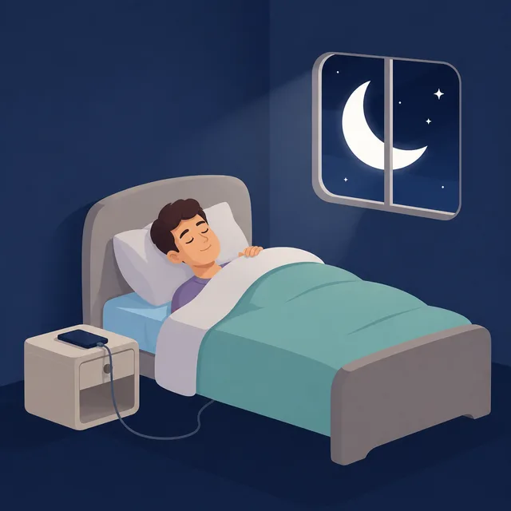
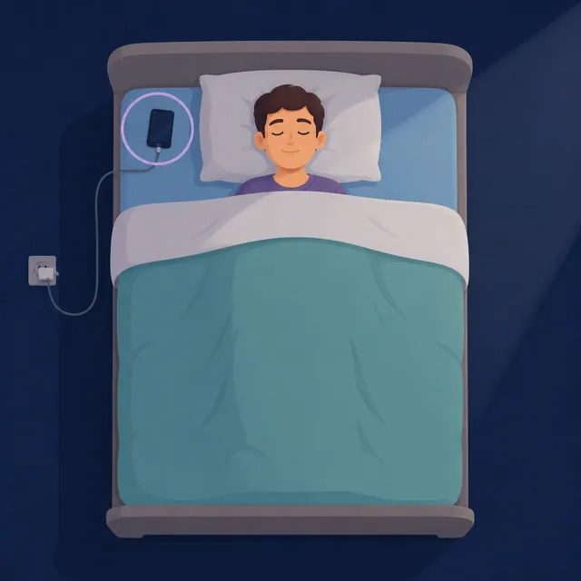

☀️ ¡Buenos días!
😴 Posponer


Para que al sonar ocupe toda la pantalla (también si estás usando el móvil), Android pide el permiso «Mostrar encima de otras aplicaciones». Actívalo en la pantalla que se abre y vuelve.
Luna da consejos generales sobre el sueño; no es un médico. Tus preguntas y los números de tus noches se envían a la IA para contestarte (nunca las grabaciones).
Elige el color de fondo. La pantalla de la noche (monitoreo) sigue siempre en negro, para que no moleste.
Amable Sleep también funciona en el navegador, en cualquier móvil u ordenador:
🌐 Abrir Amable Sleep Webgcalabro12.github.io/Sleep-AmableEnvía a quien quieras un mensaje con el enlace para que la pruebe.
¿Algo no funciona o tienes una duda? Escríbenos y te ayudamos. El email ya lleva puesto que es de Amable Sleep y la versión que tienes.
✉️ Escribir a soporte 💬 Escribir por WhatsAppEmail: info@practicaintegral.club · WhatsApp: +34 658 82 57 99
Para no volver a dormirte: cuando suena, la alarma no se apaga hasta que haces el reto (mientras lo haces, el volumen baja). Posponer funciona igual. Lo que elijas aquí se pone a todas las alarmas; luego puedes cambiarlo en cada una (en Alarmas, «Reto alarma ?»). Si no activas ninguno, se apaga con el botón.
Amable Sleep · todo se guarda en este móvil
Fichas cortas, de un minuto, para entender tu sueño y tus ronquidos. Cada una trae algo que probar esta semana.
Información general, no sustituye a tu médico. Si te preocupa algo de tu sueño, consúltalo.
Una voz te dice lo que quieras a la hora que elijas: beber agua, ir al baño, tomar una medicina… Suena por los auriculares (o por el altavoz, si lo eliges en «Avisos por»), mientras monitoreas la noche.
Funciona sin internet y con la pantalla apagada. En iPhone el volumen se ajusta con los botones del móvil.
Ojo: con la pantalla apagada YouTube suele pararse (salvo con YouTube Premium) y los anuncios pueden despertarte. Los sonidos de aquí arriba no tienen ese problema.
¿Alguna está mal clasificada? Toca su etiqueta para cambiarla. Para marcar un tramo entero, mantén pulsado un cuadrito.
Por eso los cuidamos. Las grabaciones de tus noches se quedan en tu móvil. En tu cuenta solo guardamos los números de cada noche (horas, minutos roncando…), para que no los pierdas si cambias de móvil.
Lee cómo usamos tus datos en nuestra política de privacidad.
Toca «Permitir» en cada uno. El micrófono es necesario; los demás ayudan mucho.
Para ello, pon el móvil sobre el colchón, en la esquina junto a la almohada, enchufado y con la pantalla hacia arriba.
Amable Sleep no puede activar estos modos por ti: los móviles no dejan que una app web los cambie.
Hay luz y movimiento desde hace un rato: parece que ya te has levantado.
Pulsa el botón y ronca de mentira (o habla) durante 6 segundos. Al acabar suena un pitido y te digo qué he oído.